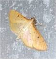

| Home |
| PEST OF AMARANTHUS |
mAJOR PESTS |
| 1. Amaranthus stem weevil |
| 2. Amaranthus caterpillar or webber |
mINOR PESTS |
| 1. Leaf webber |
| 2. Leaf webber |
| 3. Tortoise beetle |
| 4. Grasshopper |
| 5. Leaf twisting weevil |
| 6. Aphids |
| 7. Mealy bugs |
| 8. Thrips |
| Questions |
| Download Notes |
PESTS OF AMARANTHUS :: MINOR PESTS :: LEAF WEBBER
2. Leaf webber: Psara basalis (Pyraustidae: Lepidoptera)
|  |
Psara basalis |
Its habits, symptoms of damage and life history are similar to that of Hymenia recurvalis. Full fed caterpillars are greenish in colour. Adults are small with yellowish, white thorax and abdomen with brownish red fore wing and dark brown hind wing.